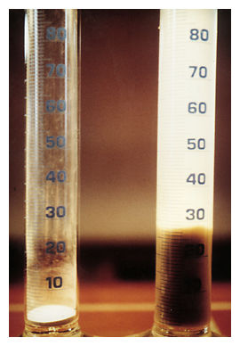

Expansiveness (also referred to as reactivity) is a phenomenon that affects many clay soils, particularly those that contain significant quantities of smectite clay minerals. In many cases, the shrinking and swelling of expansive clays in response to moisture content change can be a serious cause of damage to buildings.
Swelling clays derived from residual soil can exert uplift pressures of as much as 5,500 PSF, which can do considerable damage to lightly-loaded wood-frame structures. Insurance companies pay out millions of dollars yearly to repair homes distressed by expansive soils. Expansive soils owe their characteristics to the presence of swelling clay minerals. As they get wet, the clay minerals absorb water molecules and expand; conversely, as they dry they shrink, leaving large voids in the soil. Swelling clays can control the behavior of virtually any type of soil if the percentage of clay is more than about 5 percent by weight. Soils with smectite clay minerals, such as montmorillonite, exhibit the most profound swelling properties.
Potentially expansive soils can typically be recognized in the lab by their plastic properties. Inorganic clays of high plasticity, generally those with liquid limits exceeding 50 percent and plasticity index over 30, usually have high inherent swelling capacity. Expansion of soils can also be measured in the lab directly, by immersing a remolded soil sample and measuring its volume change.
In the field, expansive clay soils can be easily recognized in the dry season by the deep cracks, in roughly polygonal patterns, in the ground surface. The zone of seasonal moisture content fluctuation can extend from three to forty feet deep. This creates cyclic shrink/swell behavior in the upper portion of the soil column, and cracks can extend to much greater depths than imagined by most engineers.
To overcome this problems swelling index test is conducted .The shrink swell test is a simple test that is routinely employed in Geotechnical engineering practice to assess quantitatively the expansive potential of undisturbed or remolded clay soils, and to guide design of footings, Retaining walls , underground water tanks etc., which are subjected to soil pressure.

- Irrespective of high swelling potential, if the moisture content of the clay remains unchanged, there will be no volume change and structures founded on clays will not be subjected to movement caused by heaving.
- When moisture content of the clay is changed, volume expansion both in horizontal and vertical direction may take place.
- Complete saturation is not necessary to accomplish swelling.
- Slight change of moisture content, at the order of 1.0 to 2.0% magnitude is sufficient to cause detrimental swelling.
Swelling pressure is the magnitude of external pressure or stress required to maintain the content volume of the soil during its saturation.
Methods to obtain swelling pressure
- Allow the soil to swell completely and then recompress it back to its original volume.
- At each stage during swelling, compress it back to it s original volume.
- Consolidometer method in which swell of several identical samples is obtained under different external pressures and from the plot of swell/compression versus external pressure at constant volume is determined.
Factor affecting swelling pressure
- Initial water content
- Initial compaction density
- Method of compaction
- Final degree of saturation

To determine the free swell index of soils.


Q1.
Time taken for one complete oscillation
is called Time Period of the oscillator.
True
False
Q2.
Time period of the oscillator is constant for
given values of mass, length and initial
conditions.
True
False
Q3.
Value of Time period depends on initial
conditions.
True
False
Q4.
Value of time period depends on mass.
True
False
Q5.
Value of time period depends on length of the
oscillator.
True
False

- Take two specimens of 10g each of pulverised soil passing through 425µm IS Sieve and oven-dry.
- Pour each soil specimen into a graduated glass cylinder of 100ml capacity.
- Pour distilled water in one and kerosene oil in the other cylinder upto 100ml mark.
- Remove entrapped air by gently shaking or stirring with a glass rod.
- Allow the suspension to attain the state of equilibrium (for not less than 24hours).
- Final volume of soil in each of the cylinder should be read out.